소음진동산업기사 (2004-09-05 기출문제)
1과목: 소음진동개론
1. 다음 설명 중 알맞지 않은 것은?
- 입자속도 : 단위 시간당의 변위량으로 그 표시기호는 V, 단위는 m/sec이다.
- 변위 : 진동하는 입자(공기)의 어떤 순간에서의 위치와 그것의 평균위치와의 거리로 그 표시기호는 D, 단위는 m이다.
- 주파수 : 1초동안 cycle수를 말하며 그 표시기호는 f, 단위는 Hz이다.
- 파장 : 위상차이(정현파)가 180° 가 되는 거리를 말하며 그 표시기호는 λ , 단위는 m이다.
(정답률: 알수없음)

2. 다음은 소음에 대한 인간의 감수성을 설명하고 있다. 다음 설명 중 틀린 것은 어느 것인가?
- 건강한 사람보다는 환자가 더 민감하다.
- 남성보다는 여성이 더 민감하다.
- 젊은이보다는 노인이 더 민감하다.
- 노동하는 상태보다는 휴식을 취하고 있을 때가 더 민감하다.
(정답률: 알수없음)
3. 다음 중 흡음감쇠가 가장 큰 경우는 ? (순서대로 주파수, Hz / 기온℃ / 상대습도%)
- 500 / -10 / 30
- 1000 / 0 / 50
- 2000 / 10 / 70
- 4000 / 20 / 90
(정답률: 알수없음)
4. 회화방해레벨(SIL) 산출시 관계없는 주파수 밴드는?
- 600 - 1200 Hz
- 1200 - 2400 Hz
- 2400 - 4800 Hz
- 4800 - 9600 Hz
(정답률: 알수없음)
5. 인체가 수직진동을 가장 느끼기 쉬운 진동수의 범위는?
- 1∼2Hz
- 4∼8Hz
- 13∼15Hz
- 16∼20Hz
(정답률: 알수없음)
6. 다음 측정결과는 도로변에서 도로교통소음을 측정한 것이다. 이 결과를 이용하여 교통소음지수(Traffic noise index : TNI)를 구하면?
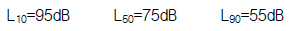
- 255
- 235
- 185
- 155
(정답률: 알수없음)
7. 공장에서 발생하는 소음공해의 특징과 가장 거리가 먼것은?
- 감각공해다.
- 피해가 광역적이다.
- 대책후에 처리할 물질이 발생하지 않는다.
- 다른 소음에 비해 진정이 많다.
(정답률: 알수없음)
8. 무지향성 점음원을 세면이 접하는 구석에 위치 시켰을 때 지향지수는?
- 8
- 9
- +8dB
- +9dB
(정답률: 알수없음)
9. 청감보정 특성곡선에서 B, C 특성은 청감 보정특성 A 와 최소가청치 및 소리의 크기, 레벨의 형이 몇 Hz(주파수)에서 거의 일치하는가?
- 500Hz
- 1000Hz
- 2000Hz
- 4000Hz
(정답률: 알수없음)
10. 소음평가지수(Noise rating number : NRN)에 대한 설명중 적당하지 않은 것은?
- 측정된 소음이 반복성 연속음은 별도로 보정할 필요가 없이 사용한다.
- 측정된 소음에서 순음성분이 많은 경우에는 +5dB의 보정을 한다.
- 측정소음이 일반적인 습관성이 아닌 소음은 보정할 필요가 없다.
- 평가기준은 청력장애, 회화 장애, 습관적인면, 충격 성분의 4가지 관점에서 평가한다.
(정답률: 알수없음)
11. 진동원, 관측점 또는 매질이 이동할 때, 관측되는 파동의 진동수(주파수)가 변화하는 성질을 무엇이라 하는가?
- 맥동현상
- 진동 모우드(Mode)현상
- 스펙트럼(Spectrum)현상
- 도플러(Doppler)현상
(정답률: 알수없음)
12. 어떤 장소에서 음을 측정한 결과 음의 세기레벨이 79dB이었다. 이 점에서의 음의 세기는 대략 얼마인가?
- 8 × 10-5W/m2
- 6 × 10-5W/m2
- 4 × 10-5W/m2
- 2 × 10-5W/m2
(정답률: 알수없음)
13. 공장 부지내의 지면에 소형압축기가 있고, 그 음원에서 5m 떨어진 곳의 음압레벨이 80dB이었다. 이것을 70dB로 하기 위해서는 압축기를 얼마만큼 더 이동하면 되겠는가?
- 8.8m
- 10.8m
- 12.8m
- 15.8m
(정답률: 알수없음)
14. 종파(소밀파)파동의 보기로 알맞는 것은?
- 물결파
- 전자기파
- 지진파의 S파
- 음파
(정답률: 알수없음)
15. 다음 이관(耳管)의 기능을 바르게 설명한 것은?
- 음을 증폭한다.
- 청신경을 음이 전달되도록 자극한다.
- 내이에 음을 공명시킨다.
- 고막 내외의 기압을 같게 한다.
(정답률: 알수없음)
16. 다음 중에서 소음레벨에 관한 기술로서 올바른 것은?
- 소음레벨은 음의 물리적 강도를 나타낸 것이다.
- 소음레벨의 단위는 국제적으로 phon이 사용되고 있다.
- 소음레벨과 음의 크기의 레벨은 같은 값이다.
- 소음레벨은 어떤 음에 대한 소음계의 지시값이다.
(정답률: 알수없음)
17. 다음 중 소음에 의한 신체적 피해로 볼 수 없는 것은?
- 혈당도 상승
- 맥박수 증가
- 위액산도 증가
- 호흡깊이의 감소
(정답률: 알수없음)
18. 아래 그림은 음이 전파 중에 판에 부딪힐 때의 형태를 모형적으로 나타낸 것이다. 각 음의 명칭이 틀린 것은?
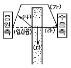
- (가) 회절음
- (나) 반사음
- (다) 흡수음
- (라) 직접음
(정답률: 알수없음)
19. 충분히 넓은 벽면에 음파가 입사하여 일부가 투과할 때 입사음의 세기를 Ii, 투과음의 세기를 It라고 하면 투과 손실(transmission loss)은 다음 중 어느 것인가?
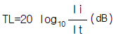
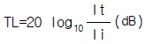
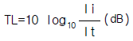
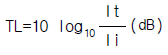
(정답률: 알수없음)
20. 다음 중 단위를 데시벨[dB]로 사용하지 않는 것은?
- 음의 세기레벨
- 음압레벨
- 소음레벨
- 음의 크기레벨
(정답률: 알수없음)
2과목: 소음진동 공정시험 기준
21. 다음 ( )안에 알맞는 내용은?
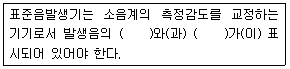
- 음압도, 음의 세기
- 파장, 주파수
- 음의 세기, 파장
- 주파수, 음압도
(정답률: 알수없음)
22. 소음계의 A 및 C 특성회로를 사용하여 같은 소음원의 소음을 측정한 결과 소음레벨이 같았다면 소음의 특성으로 맞는 것은?
- 저주파수 성분이 거의 존재하지 않는다.
- 고주파수 성분이 거의 존재하지 않는다.
- A 특성은 고음압레벨에 대한 응답이다.
- C 특성은 저음압레벨에 대한 응답이다.
(정답률: 알수없음)
23. 진동픽업의 설치장소 및 방법으로 적합하지 않은 것은?
- 복잡한 반사, 회절현상이 예상되는 지점은 피한다.
- 완충물이 없고, 굳은 장소로 한다.
- 경사 또는 요철이 없는 장소로 한다.
- 수평방향 진동을 측정할 수 있도록 한다.
(정답률: 알수없음)
24. 마이크로폰에 의하여 음향에너지를 전기에너지로 변환시킨 양을 증폭시키는 것은?
- 마이크로폰
- 증폭기
- 레벨렌지 변환기
- 동특성 조절기
(정답률: 알수없음)
25. 철도진동측정시 측정대상은 열차통과시마다 최고진동레벨이 배경진동레벨보다 최소 5dB(V)이상 큰 것에 한하여 연속 몇 개 열차 이상을 대상으로 측정하여야 하는가?
- 5개
- 10개
- 15개
- 20개
(정답률: 알수없음)
26. 배출허용기준의 소음 측정 자료평가표에 기재되는 항목과 가장 거리가 먼 것은?
- 측정현황
- 측정기기
- 측정자
- 측정환경
(정답률: 알수없음)
27. 시간적으로 변동하지 아니 하거나 또는 변동폭이 작은 소음을 무엇이라 하는가?
- 대상 소음
- 정상 소음
- 변동 소음
- 비변동 소음
(정답률: 알수없음)
28. 측정소음도가 78dB(A)이고 배경소음도가 72dB(A)일 경우 대상소음도는 약 얼마인가?
- 73dB(A)
- 75dB(A)
- 74dB(A)
- 77dB(A)
(정답률: 알수없음)
29. 환경기준 측정방법의 일반사항에서 맞는 것은?
- 손으로 소음계를 잡고 측정할 경우 소음계는 측정자의 몸으로부터 30cm 이상 떨어져야 한다.
- 풍속이 5m/sec 이상일 경우에는 방풍망을 부착하고 바람의 영향이 적은 곳에서 측정하여야 한다.
- 풍속이 2m/sec이상일 경우는 반드시 마이크로폰에 방풍망을 부착하여야 한다.
- 진동이 많은 장소 또는 전자장의 영향을 받는 곳에서의 측정을 원칙으로 한다.
(정답률: 알수없음)
30. 발파소음 측정을 바르게 설명한 것은?
- 발파소음이라 해서 측정방법을 별도로 정해 놓은 것은 아니다.
- 발파소음은 순간치를 측정하는 것이므로 배경소음 보정이 필요없다.
- 최고 소음 고정용 소음계를 사용할 때에는 당해 지시치를 측정소음도로 한다.
- 마이크로폰의 높이를 지면으로부터 2m 이상으로 하여 진동영향을 최소화하여야 한다.
(정답률: 알수없음)
31. 발파진동 측정방법으로 틀린 것은?
- 측정진동레벨은 발파진동이 지속되는 기간동안에 측정하여야 한다.
- 배경진동레벨은 대상진동(발파진동)이 없을 때 측정하여야 한다.
- 진동레벨계만으로 측정할 경우에는 최고 진동레벨이 고정(Hold)되는 것에 한한다.
- 측정진동레벨은 7일간의 각 시간대별 평균 값으로 갈음한다.
(정답률: 알수없음)
32. 측정소음도가 배경소음보다 몇 dB(A) 이상 크면 배경소음의 보정없이 측정소음도를 대상소음도로 하는가?
- 5 dB(A)
- 7 dB(A)
- 8 dB(A)
- 10 dB(A)
(정답률: 알수없음)
33. 소음을 측정하는데 사용되는 소음계 구조로서 최소한의 구성장치가 아닌 것은?
- 마이크로폰
- 레코더
- 교정장치
- 청감보정회로
(정답률: 알수없음)
34. 중심주파수가 500Hz일 때 1/1 옥타브밴드 분석기의 밴드폭은?
- 750 Hz
- 500 Hz
- 353.5 Hz
- 310.5 Hz
(정답률: 알수없음)
35. 소음측정기의 구성에 있어 지시계기와 관련이 제일 많은 것은?
- 출력단자
- 청감 보정회로
- 레벨렌지 변환기
- 마이크로폰
(정답률: 알수없음)
36. 소음계의 일반적 사용법에 대한 설명으로 틀린 것은?
- 소음계와 소음도 기록기를 연결하여 측정· 기록하는 것을 원칙으로 한다.
- 소음계의 동특성은 원칙적으로 느림(slow)을 사용하여 측정하여야 한다.
- 소음도 기록기가 없을 경우에는 소음계만으로 측정해도 된다.
- 소음계는 매회 교정을 실시해야 한다.
(정답률: 알수없음)
37. 500Hz 이하의 성분이 주된 소음을 측정하였을 경우 가장 낮은 값을 나타내는 특성은?
- A특성
- B특성
- C특성
- F(Lin)특성
(정답률: 알수없음)
38. 5Hz의 진동가속도 실효치가 0.15㎧2일 경우 진동레벨은 몇 dB(V)인가?
- 74dB(V)
- 79dB(V)
- 84dB(V)
- 89dB(V)
(정답률: 알수없음)
39. 다음 용어의 정의중 알맞지 않은 것은?
- 평가소음도 : 대상소음도에 충격음, 관련시간대에 대한 측정소음 발생시간의 백분율, 시간별, 지역별 등의 보정치를 보정한 후 얻어진 소음도를 말한다.
- 대상소음도 : 측정소음도에 배경소음을 보정한 후 얻어진 소음도를 말한다.
- 배경소음도 : 측정소음도의 측정위치에서 방해소음없이 대상물질만의 소음을 측정한 소음도를 말한다.
- 등가소음도 : 임의의 측정시간동안 발생한 변동소음의 총에너지를 같은 시간내의 정상소음의 에너지로 등가하여 얻어진 소음도를 말한다.
(정답률: 알수없음)
40. 소음의 환경기준 측정시 낮시간대(06:00~22:00)에 각 측정지점에서 2시간이상 간격으로 몇 회 이상 측정해야 하는가?
- 2회
- 4회
- 6회
- 8회
(정답률: 알수없음)
3과목: 소음진동방지기술
41. 다음은 흡음대책에 관한 내용들이다. 틀린 것은?
- 잔향시간이란 실내에서 음원을 끈 순간부터 에너지 밀도가 100만분의 1 감쇠하는데 소요되는 시간이다.
- 흡음이란 매질입자의 운동에너지를 열에너지로 변환시키는 것이다.
- 흡음력(A)은 건물내부의 표면적과 투과율의 곱으로 나타낸다.
- 평균흡음율을 구하는 방법중의 하나는 잔향시간을 이용한다.
(정답률: 알수없음)
42. 방진대책에 있어서 스프링 자체의 고유진동수와 외력의 강제진동수가 같은 공진상태에서 일어나는 현상은?
- 록킹현상
- 서어징현상
- 차진현상
- 댐핑현상
(정답률: 알수없음)
43. 주파수에 따른 방음벽의 차음효과에 관한 설명 중 맞는 것은?
- 고주파일수록 차음효과가 좋다.
- 저주파일수록 차음효과가 좋다.
- 4 KHz 이상에서는 차음효과가 없다.
- 주파수에는 무관하다.
(정답률: 알수없음)
44. 진동감쇠율 ζ 와 진동의 대수감쇠율 δ 와의 관계를 바르게 나타낸 것은?
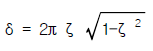
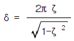
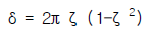
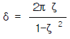
(정답률: 알수없음)
45. 다음에 보여주는 표와 같은 흡음계수를 갖는 재질의 소음감음계수(NRC:Noise Reduction Coefficient)는?
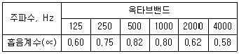
- 0.66
- 0.69
- 0.71
- 0.75
(정답률: 알수없음)
46. 운동방정식 mX + cX + kx = 0로 표시되는 감쇠 자유진동에서 임계 감쇠(critical damping)가 되는 조건으로 맞는 것은 어느 것인가?
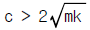
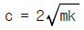
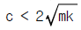
- c = 0
(정답률: 알수없음)
47. 다음은 가진력저감을 위한 방진대책을 나열한 것이다. 틀린 것은?
- 기초부의 중량을 크게하거나 작게하여 진동 진폭을 감소시킨다.
- 기계에서 발생하는 가진력은 소음대책과 달리 지향성과 무관하므로 기계의 방향을 바꾸는 조치가 필요하다.
- 크랭크 기구를 가진 왕복동기계는 복수개의 실린더를 가진 것으로 교체한다.
- 회전기계의 회전부의 불평형은 정밀실험을 통해 평형을 유지한다.
(정답률: 알수없음)
48. 공기스프링의 고유진동수 f0를 근사적으로 나타낸 식은 어느 것인가? (단, V1:공기스프링의 내부용적, V2:보조탱크의 내부용적, A:수압면적, g:중력가속도)
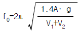
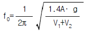
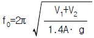
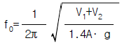
(정답률: 알수없음)
49. A실과 B실사이에 칸막이벽이 설치되어 있다. A실에 소음원이 있을 때 B실의 음압레벨을 5dB 낮추는 방법으로 옳지 않은 것은?(단, 칸막이벽 이외의 소음전파는 무시한다.)
- 소음원의 음향파워를 약 1/3로 낮춘다.
- 칸막이벽의 투과손실을 5dB 높인다.
- B실의 흡음력을 약 3배로 증가시킨다.
- A실의 흡음력을 약 1/3로 낮춘다.
(정답률: 알수없음)
50. 가로, 세로가 7m × 4m이고, 높이가 5m인 방의 천정, 바닥 및 벽체의 흡음율이 각각 0.2, 0.3 및 0.5일 때 이 방의 평균흡음율은?
- 0.2
- 0.4
- 0.6
- 0.8
(정답률: 알수없음)
51. 어떤 진동체가 자유진동하는 동안 진폭이 그림과 같이 감소하고 있다. 이 진동체의 대수감쇠율을 바르게 정의한 것은?
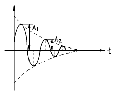
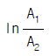
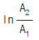
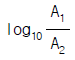
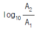
(정답률: 알수없음)
52. 외부에서 가해지는 강제진동수(f), 계의 고유진동수(fn)의 비와 진동 전달율의 관계를 설명한 것 중 틀린 것은?
- f/fn ＜ 2 일 때 항상 전달력은 외력보다 크다.
- f/fn = 1 일 때 전달율이 최대가 된다.
- f/fn = 2 일 때 전달력은 외력보다 작아 차진에 유효하다.
- f/fn ＞ 3 이 되도록 방진설계하는 것이 바람직하다.
(정답률: 알수없음)
53. 그림과 같은 진동계의 등가 스프링 상수(Keq)를 옳게 나타낸 것은?
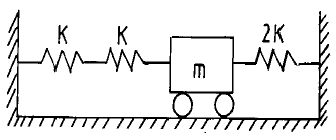
- 4k
- 2k
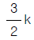
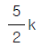
(정답률: 알수없음)
54. 고무절연기 위에 설치된 기계가 1000 rpm 에서 25% 의 전달률을 가진다면 평형상태에서 절연기의 정적처짐은 얼마인가?
- 0.25cm
- 0.34cm
- 0.45cm
- 0.70cm
(정답률: 알수없음)
55. 다음은 소음기(Silencer)의 기본 종류를 열거한 것이다. 이 소음기의 종류중에서 급격한 관경확대로 유속을 낮추어 소음을 감소시키는 방식은?
- 공명형
- 팽창형
- 간섭형
- 흡음형
(정답률: 알수없음)
56. 스프링으로 지지되어 있는 질량의 정적처침(staticdeflection)이 2cm일 때 이 진동계의 고유진동수는?
- 2.5 Hz
- 3.5 Hz
- 4.5 Hz
- 5.5 Hz
(정답률: 알수없음)
57. 소음방지대책의 방법중 소음원대책에 해당하지 않는 것은?
- 운전스케줄의 변경
- 저소음 장비의 사용
- 거리감쇠
- 방음박스 설치
(정답률: 알수없음)
58. 다음 중 정현진동의 진동변위를 나타낸 식으로 맞는 것은?(단, x:진동변위(mm), x0:변위진폭(mm), f:진동수(Hz))
- x = x0 sin 2π f
- x = x0f sin 2π ft
- x = f sin π x0
- x = x0 sin 2π ft
(정답률: 알수없음)
59. 차음대책으로서 차음벽을 설계 및 시공할 때에 유의할 점을 잘못 설명한 것은 어느 것인가?
- 차음에 가장 영향이 큰 것은 틈이므로 틈이 없도록 한다.
- 큰 차음효과를 원하는 경우에는 내부에 다공질 재료를 삽입한 이중벽 구조로 한다.
- 콘크리트 블록의 차음효과를 위해서 모르타르로 처리할 경우 양면보다 한쪽면을 두껍게 발라야 한다.
- 기진력이 큰 기계가 있는 공장의 차음벽은 탄성지지, 방진 합금 이용이나 댐핑(damping)처리를 해야 한다.
(정답률: 알수없음)
60. 어떤 진동이 큰 기계에서 20m 떨어진 지점의 정밀기계에 미치는 진동방해를 10dB 정도 낮추고자 한다. 다음 방지 대책 중 기대효과가 가장 없다고 생각되는 것은?
- 진동원의 기계를 방진지지로 한다.
- 정밀기계를 방진지지로 한다.
- 진동원의 기계를 진동이 작은 것과 교환한다.
- 두 기계의 중앙선상에 깊이 1m 정도의 빈 도랑을 만든다.
(정답률: 알수없음)
4과목: 소음진동방지기술
61. 환경관리인 자격기준중 소음· 진동기사 2급 대체인력을 일정 자격을 갖추고 환경분야 2년이상 종사한 자로 규정하고 있는데 그 자격분야가 아닌 것은?(단, 2급: 산업기사와 같음)
- 기계분야기사 2급이상
- 전기분야기사 2급이상
- 대기환경기사 2급이상
- 폐기물관리기사 2급이상
(정답률: 알수없음)
62. 소음· 진동검사기관과 가장 거리가 먼 것은?
- 도의 보건환경연구원
- 환경보전협회
- 유역환경청
- 환경관리공단
(정답률: 알수없음)
63. 측정망 설치계획에 포함되어야 할 사항이 아닌 것은?
- 측정망의 배치도
- 측정소를 설치할 토지 또는 건축물의 위치 및 면적
- 측정망 규모 및 측정범위
- 측정망 설치시기
(정답률: 알수없음)
64. 환경관리인은 몇 년마다 1회이상 교육을 받아야 하는가?
- 1년
- 2년
- 3년
- 4년
(정답률: 알수없음)
65. '방음시설'의 용어정의를 가장 적절하게 표현한 것은?
- 소음· 진동 배출시설로부터 배출되는 소음, 진동을 제거하거나 감소시키는 시설
- 소음· 진동을 제거 또는 감소시키는 공장의 기계, 기구, 시설 기타 물체
- 소음· 진동이 발생하는 공장의 기계, 기구, 시설을 개선시켜 소음을 방지하는 시설
- 소음· 진동 배출시설이 아닌 물체로부터 발생하는 소음을 제거하거나 감소시키는 시설
(정답률: 알수없음)
66. 다음 중 배출시설의 설치신고 또는 허가 받은 자가 변경신고를 하여야 할 경우가 아닌 것은?
- 배출시설의 규모를 100분의 30 이상 증설하는 경우
- 사업장의 명칭을 변경하는 경우
- 배출시설을 폐쇄하는 경우
- 사업장 대표자가 변경되는 경우
(정답률: 알수없음)
67. 운행차 소음허용기준을 초과한 경우 시장등은 몇일 범위내에서 운행차 개선명령과 함께 사용정지를 명할 수 있는 가?
- 7일
- 10일
- 15일
- 20일
(정답률: 알수없음)
68. 생활소음규제기준 중 옥외설치된 확성기의 조석 시간대 (아침-⑤:00~08:00, 저녁-18:00~22:00) 소음규제기준은? (단, 대상지역은 주거지역이다.)
- 60dB(A)이하
- 65dB(A)이하
- 70dB(A)이하
- 75dB(A)이하
(정답률: 알수없음)
69. 배출시설 및 방지시설등과 관련된 행정처분기준 중 '배출허용기준을 초과한 공장에 대하여 개선명령을 하여도 당해 공장의 위치에서는 이를 이행할 수 없는 경우'에 내려지는 1차행정처분기준은?
- 사용중지명령
- 허가취소
- 조업정지
- 폐쇄
(정답률: 알수없음)
70. 교육기관장이 환경관리인에 대한 다음 해의 교육계획을 언제까지 환경부장관에게 제출하여 승인받아야 하는가?
- 매년 10월 31일
- 매년 11월 30일
- 매년 12월 31일
- 매년 1월 31일
(정답률: 알수없음)
71. 배출시설의 설치신고 또는 허가를 받고자 하는 자가 배출 시설설치신고서 또는 배출시설설치허가신청서에 첨부하여야 하는 서류와 가장 거리가 먼 것은?
- 배출시설 배치도
- 방지시설 배치도
- 배출시설의 설치내역서
- 방지시설의 설치내역서
(정답률: 알수없음)
72. 다음 이동소음원의 종류 중 이동소음의 원인을 야기하는 기계· 기구가 아닌 것은?
- 이동하며 영업을 하기 위하여 사용하는 확성기
- 행락객이 사용하는 음향기계 및 기구
- 소음방지장치가 비정상이거나 음향장치를 부착하여 운행하는 이륜자동차
- 기타 건설교통부장관이 고요하고 편안한 생활환경의 조성을 위하여 필요하다고 인정하여 지정· 고시하는 기계· 기구
(정답률: 알수없음)
73. 공장진동 배출허용기준은?
- 평가진동레벨 65dB(V)
- 평가진동레벨 60dB(V)
- 평가진동레벨 55dB(V)
- 평가진동레벨 50dB(V)
(정답률: 알수없음)
74. 사업자는 배출시설과 방지시설의 정상적인 운영· 관리를 위하여 환경관리인을 임명하고 누구에게 신고하여야 하는 가?
- 환경부장관
- 시· 도지사
- 지방환경청장
- 환경관리인협회
(정답률: 알수없음)
75. 환경부장관이 소음· 진동규제법의 목적을 달성하고자 관계기관의 장에게 요청할 수 있는 사항으로 적합치 않은 것은?
- 도시재개발 사업의 변경
- 택지개발 사업의 변경
- 주택단지 조성의 변경
- 공항주변의 공동주택건축허가의 제한
(정답률: 알수없음)
76. 다음 중 진동배출시설 기준으로 적합치 않은 것은?
- 50마력이상의 성형기(압출, 사출 포함)
- 30마력이상의 분쇄기(파쇄기 및 마쇄기 포함)
- 30마력이상의 단조기
- 20마력이상의 프레스(유압식 포함)
(정답률: 알수없음)
77. 소음· 진동규제법에서 말하는 소음의 종류에 해당하지 않는 것은?
- 생활소음
- 건설소음
- 항공기소음
- 공장소음
(정답률: 알수없음)
78. 쾌적한 환경을 조성하기 위한 기준으로 일반지역 "가" 지역(전용주거지역)의 낮 시간대와 밤 시간대의 소음설정 기준(dB(A))은?
- 낮-50, 밤-40
- 낮-55, 밤-45
- 낮-60, 밤-50
- 낮-65, 밤-55
(정답률: 알수없음)
79. 제작차 소음허용기준에서 자동차의 소음종류별로 소음배출특성을 참작하여 정하는데 참작되는 소음의 종류가 아닌 것은?
- 경적소음
- 배기소음
- 주행소음
- 가속주행소음
(정답률: 알수없음)
80. 소음기 또는 소음덮개를 떼어 버리거나 경음기를 추가로 부착한 자동차 소유자에 대한 행정처분 기준은?
- 30만원 이하의 과태료
- 50만원 이하의 과태료
- 100만원 이하의 과태료
- 100만원 이하의 벌금
(정답률: 알수없음)